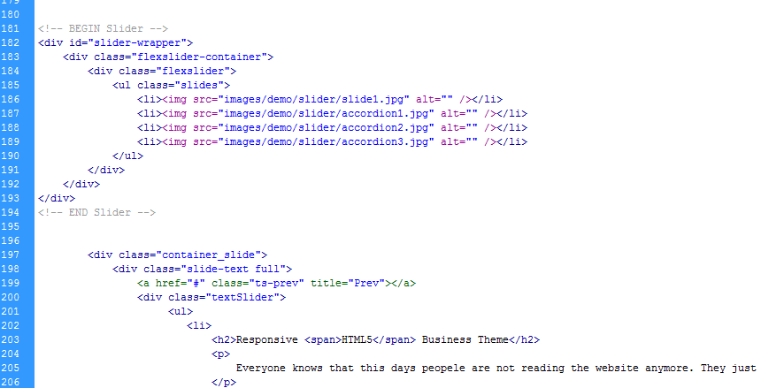

By: Ignitethemes
Thank you for purchasing my theme. If you have any questions that are beyond the scope of this help file, please feel free to email via my user page contact form here. Thanks so much!
This theme uses the Skeleton Responsive Framework. You can find more information about the Skeleton Responsive Framework Here. Skeleton has a familiar, lightweight 960 grid as its base, but elegantly scales down to downsized browser windows, tablets, mobile phones in landscape and portrait.
You can find all the css settings for the Skeleton Responsive Framework inside the folder "html/css/style.css".
Tip: If you would like to edit a specific element, simply note the class or id name in the html, then go to the appropriate css file and locate it.
This theme imports several Javascript files.
Note: You can NOT test the contact form locally, you must upload it to a webserver running PHP 5 to test.
This theme includes a working out of the box contact form. All the contact form Scripts are contained within the folder "html/contact". To set your email address open "html/contact/contactform.php" Go to line 16 and add your email address. Remember you can't test the contact form locally, it must be uploaded to your webserver to test.
The following files and folders relate to the Revolution Slider:
Here is an example of the FlexiSlider HTML.
This theme includes a filterable/sortable gallery. All are very customizable and can display Images, Vimeo video, a Youtube video or be link to another page or website. The filterable gallery utilizes the quicksand plugin, and all utilize the Pretty Photo lightbox. See Sources and Credits below.
To add your Twitter feed just open each html file, in the code scroll towards the bottom of the page and find “igniteflash” then just replace it with your Twitter id.
Included in the package is a psd folder containing many of the elements to make skining a little easier. The folder does not contain the complete layouts, once again only main elements.
Once again, thank you so much for purchasing this theme. As I said at the beginning, I'd be glad to help you if you have any questions relating to this theme. No guarantees, but I'll do my best to assist. If you have a more general question relating to the themes on ThemeForest, you might consider visiting the forums and asking your question in the "Item Discussion" section. If you have any questions that are beyond the scope of this help file, please feel free to email via my user page contact form here